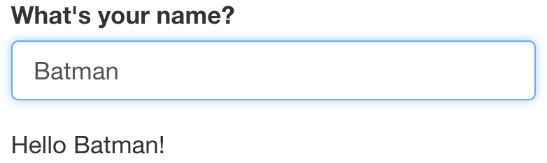
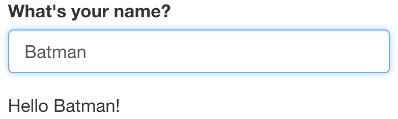

Chapter 5 Reactivity
When you change the input, the output is automatically updated.
ui <- fluidPage(
textInput("name", "What's your name?"),
textOutput("greeting")
)
server <- function(input, output, session) {
output$greeting <- renderText({
paste0("Hello ", input$name, "!")
})
} 


5.1 Reactive expressions save recomputation
Example of a reactive expression
library(shiny)
y <- reactive(input$x + 1)
# or
y <- reactive({
input$x + 1
})
# or
y <- reactive({
return(input$x + 1)
})Reactivity explained using Pythagoras calculation: We have used browser() calls to debug the function
ui_pythagorus <- fluidPage(
titlePanel("Hypotenuse app"),
sliderInput("a", "Length a", 0, 10, 5),
sliderInput("b", "Length b", 0, 10, 5),
textOutput("result"))
server_pythagorus <- function(input, output, server) {
a2 <- reactive({
cat("Compute a squared.\n")
input$a ** 2
})
browser()
b2 <- reactive({
cat("Compute b squared.\n")
input$b ** 2
})
browser()
output$result <- renderText({
cat("Compute hypotenuse.\n")
h <- sqrt(a2() + b2())
cat("Done computing hypotenuse.\n")
paste0("The hypotenuse is ", h)
})
browser()
}Now, we run the function